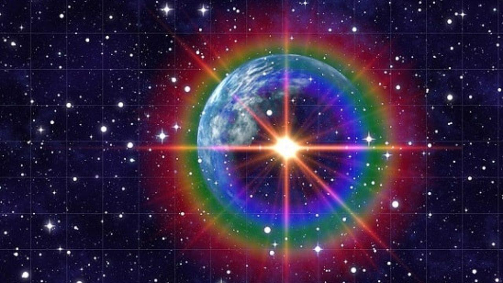

El Universo

TOP DE ESTRELLAS MÁS MASIVAS
- R136a1, estrella hipergigante azul
- Estrella de la Nebulosa Peonía
- Estrella Pistola
Top de Misiones Espaciales
- Apollo 8
- Géminos
- Apollo 11
Astrobiología

La astrobiología es una disciplina fascinante que busca comprender el origen, la evolución y la distribución de la vida en el universo. A través de la combinación de la astronomía, la biología, la química y la geología, los astrobiólogos exploran cómo las condiciones ambientales, los elementos químicos y las interacciones complejas pueden dar lugar a la aparición y supervivencia de la vida en otros planetas y lunas.
¿De qué se ocupa?
El principal objeto de estudio de esta área multidisciplinaria es la vida y paradójicamente, aún cuando nos sabemos organismos vivos que interactuamos en un ambiente repleto de seres animados, tenemos dificultades para presentar una definición de vida que sea válida y aceptada por todas las disciplinas que de alguna manera se ocupan de este maravilloso fenómeno. Algunos de los tópicos que pueden encuadrarse en la astrobiología y que le permiten abordar el estudio de la vida en el Universo son el origen y evolución de los diferentes objetos de nuestro Sistema Solar, el descubrimiento de sistemas planetarios extrasolares, las novedosas formas de vida en ambientes extremos, la búsqueda de inteligencia extraterrestre, el cambio de una visión geocéntrica hacia una visión más universal, los avances tecnológicos que permiten generar propuestas para la colonización de otros planetas diferentes a la Tierra, entre otros.
Origen de Universo

El origen del universo es un enigma apasionante que ha cautivado a la humanidad durante siglos. Según la teoría científica más ampliamente aceptada, conocida como el Big Bang, el universo comenzó hace aproximadamente 13,8 millones de años a partir de una singularidad infinitamente densa y caliente. En el instante inicial, el espacio, el tiempo y la energía se expandieron de manera explosiva, dando origen a todo lo que conocemos hoy en día. A medida que el universo se enfriaba, las partículas subatómicas se formaron y comenzaron a unirse para crear átomos simples. Con el paso del tiempo, la gravedad atrajo estas partículas y las agrupó en estructuras más grandes, como estrellas y galaxias. Estas estrellas luego sintetizaron elementos más pesados a través de reacciones nucleares en sus núcleos y, al final de sus ciclos de vida, libere estos elementos al espacio en explosiones espectaculares conocidas como supernovas. Estos elementos enriquecidos se dispersaron por todo el cosmos y dieron origen a nuevas estrellas y sistemas planetarios, incluido nuestro propio sistema solar. El estudio del origen del universo, a través de la cosmología y la física teórica, continúa desafiando nuestra comprensión, pero también nos maravilla con la belleza y la complejidad de nuestro vasto cosmos. El término universo se refiere a un sistema cerrado que lo abarca todo: espacio, tiempo, energía, materia... De su estudio se encarga la cosmología, una ciencia que integra a otras varia, como la física y la astronomía. Se conocen cuatro dimensiones del Universo: tres espaciales y una temporal. Juntas forman el espacio-tiempo, un modelo matemático que las combina en un único continuo donde se producen todos los sucesos físicos del Cosmos. Las observaciones indican que el Universo nació, evoluciona y cambia sin cesar. Sin embargo, las leyes físicas que lo rigen se consideran constantes en cualquier lugar y momento, excepto en los primeros instantes, todavía difíciles de entender. La teoría que mejor explica su funcionamiento es, de momento, la relatividad general. El modelo estándar, por su parte, describe las cuatro fuerzas que lo mantienen y las partículas sobre las que actúan.
Origen de las Estrellas

El origen de las estrellas es un proceso asombroso y fascinante que ha dado lugar a la inmensa variedad y belleza que observamos en el universo. Las estrellas se forman a partir de nubes interestelares compuestas principalmente por gas y polvo cósmico. Estas nubes, conocidas como nebulosas, pueden ser perturbadas por diversos factores, como ondas de choque producidas por la explosión de una supernova cercana o la interacción gravitatoria con otras nubes. Cuando una región de una nebulosa colapsa debido a estas perturbaciones, comienza a fragmentarse en pequeñas masas de gas y polvo. A medida que estas masas se contraen, la gravedad interna se vuelve más fuerte y el proceso de colapso continúa, descubriendo una acumulación de materia en el centro.
Cosmología
La Cosmología se ocupa científicamente de aspectos como la composición del Universo, su estructura, forma, origen, evolución y destino final. Para ello, se sirve de la observación astronómica y el conocimiento científico. Otras ciencias como la Astronomía, la Física y las Matemáticas son de gran utilidad para la Cosmología. Los avances tecnológicos son fundamentales en el desarrollo de la Cosmología moderna.
Cosmología Moderna
La Cosmología moderna comienza hacia el año 1700. Entonces se planteó por primera vez la idea de que todas las estrellas de la Vía Láctea forman una agrupación en medio de un Universo mucho mayor. Antes, se creía que nuestra galaxia era todo el Universo. En el s. XX la Cosmología estuvo marcada por dos grandes avances: la teoría de la relatividad de Einstein, y la teoría inflacionaria. La relatividad unifica el espacio, el tiempo y la gravedad, y cambia la visión del tejido del Universo. La teoría inflacionaria plantea que el espacio se expandió rapidísimamente después del Big Bang. Hoy, el estudio de la Cosmología se centra en la Física de Partículas. El principal instrumento de la Cosmología actual no son los telescopios, sino los grandes aceleradores de partículas. Buscan partículas que ayuden a resolver misterios como la composición de la materia oscura, qué pasó en los primeros momentos del Universo, o si existen otras dimensiones que no vemos.
Big Bang

El Big Bang es cómo los astrónomos explican la forma en que comenzó el universo. Es la idea de que el universo comenzó como un solo punto, luego se expandió y se estiró para crecer tanto como lo es ahora, ¡y todavía se está extendiendo! Según la teoría del Big Bang, hace unos 13.800 millones de años, el universo, concentrado en un ínfimo y a su vez infinitamente pequeño punto que albergaba toda la materia, explotó para después enfriarse a medida que se expandía. Posteriormente, en el transcurso de esta expansión, se fueron desencadenando y encandenando a su vez, las reacciones que cocinaron las primeras estrellas, galaxias, y todo aquello que hoy vemos en el Universo.
FORMULARIO